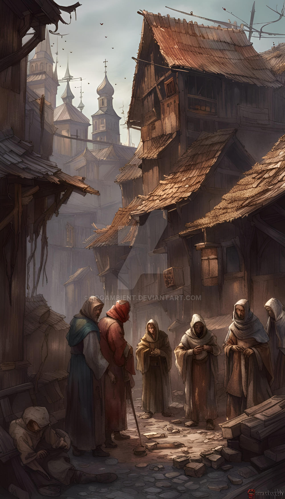
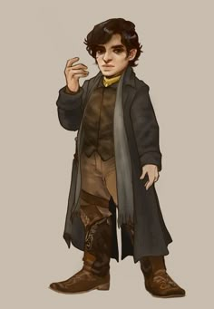
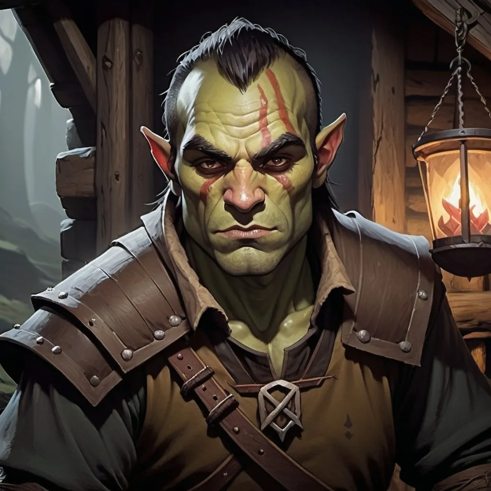

Ghetto
Garagor je velké město, ve kterém žije mnoho lidí. Mnoho lidí na omezeném prostoru. Mnoho lidí a
nelidí. Takže se občas stane, že zámožný kupec - člověk, si koupí nějaký pozemek, na kterém žijí
hobiti, nebo jiní nelidé. A ti se přece musí odstěhovat někam jinam...
Garagorské ghetto je velké místo, kde se koncentrují rasy všeho druhu - od trpaslíků a hobitů přes
půlorky a tieflingy až po občasné drakorozené a drowy.
Není zde moc organizací, aspoň ne těch oficiálních. Co zde ale naleznete jsou vřelé komunity pro
"neměstské" a pro "nelidi", naopak lidé a jim podobní, kteří tolik nevybočují z řady jsou tu lehce
utiskováni, dokud se neprokážou přínosnými pro komunity.
Krádeže jsou zde na denním pořádku, stráží tu moc není a často zde platí právo silnějšího, pokud se
nenalézáte v oblasti patřící nějaké konkrétní komunitě. Mezi těmi ale také probíhá jakási rivalita,
která je však mírněná spory s městem.
Místní rasy bývají často najímány pro své dovednosti na různorodé (legální i nelegální) práce, které
jsou potřebné po celé Varce, proto se vyplatí jim zůstávat v okolí Garagoru.
Hobbiti bývají najímáni pro krádeže malé i velké.
Půlorci jako osobní strážci či jiná povolání vyžadující hrubou sílu a výdrž.
Gnómové pro jejich jemnou motoriku a zručnost
Dobrodružství, která zde proběhla:
- Doprovod karavany
- - krátký průjezd ghettem, při kterém byl Pertan okraden
Ghetto na mapě
Uličky ghetta
Hobit z ghetta
Půlork z ghetta